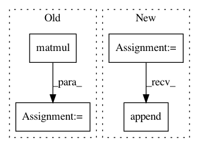

fca285821740bcc013bfe27b5dd11b7fdb9b9812,gpytorch/lazy/kronecker_product_added_diag_lazy_tensor.py,KroneckerProductAddedDiagLazyTensor,_solve,#KroneckerProductAddedDiagLazyTensor#Any#Any#Any#,49
Before Change
lt = self.lazy_tensor.to(torch.double)
dlt = self.diag_tensor.to(torch.double)
KDinv = KroneckerProductLazyTensor(
*[tfull.matmul(tdiag.inverse()) for tfull, tdiag in zip(lt.lazy_tensors, dlt.lazy_tensors)]
)
// TODO: Figure out how to cache the decompositon for use in later solves
Lambda, S = KDinv.symeig(eigenvectors=True)
LambdaI = DiagLazyTensor(Lambda + 1)
tmp_term = S.matmul(LambdaI.inv_matmul(S._transpose_nonbatch().matmul(rhs)))
After Change
for lt_, dlt_ in zip(lt.lazy_tensors, dlt.lazy_tensors):
evals_, evecs_ = lt_.symeig(eigenvectors=True)
sub_evals.append(DiagLazyTensor(evals_ / dlt_.diag_values))
sub_evecs.append(evecs_)
Lambda_I = KroneckerProductDiagLazyTensor(*sub_evals).add_jitter(1.0)
S = KroneckerProductLazyTensor(*sub_evecs)
tmp_term = S.matmul(Lambda_I.inv_matmul(S._transpose_nonbatch().matmul(rhs)))
res = lt._solve(rhs - tmp_term, preconditioner=preconditioner, num_tridiag=num_tridiag)
In pattern: SUPERPATTERN
Frequency: 3
Non-data size: 4
Instances
Project Name: cornellius-gp/gpytorch
Commit Name: fca285821740bcc013bfe27b5dd11b7fdb9b9812
Time: 2021-01-18
Author: balandat@fb.com
File Name: gpytorch/lazy/kronecker_product_added_diag_lazy_tensor.py
Class Name: KroneckerProductAddedDiagLazyTensor
Method Name: _solve
Project Name: geomstats/geomstats
Commit Name: f0815a6bbb3af21866202175779e7acbb4b1bb1d
Time: 2021-03-24
Author: nicolas.guigui@inria.fr
File Name: geomstats/geometry/symmetric_matrices.py
Class Name: SymmetricMatrices
Method Name: apply_func_to_eigvals
Project Name: GPflow/GPflow
Commit Name: 22edd92d06c201b1f40a656e5bbca84a5f483f2d
Time: 2020-02-14
Author: st--@users.noreply.github.com
File Name: gpflow/kernels/misc.py
Class Name: Coregion
Method Name: K